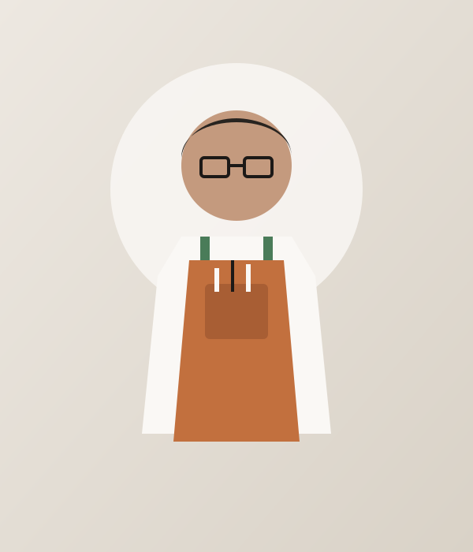

О нашем доме быта
Работаем в Москве с 2012 года и помогаем содержать вещи и дом в порядке
Мы открылись как небольшая мастерская по ремонту обуви и одежды, а со временем выросли в полноценный дом бытовых услуг. Нам важно, чтобы человек мог принести в одно место зимнюю куртку в чистку, подшить брюки, поставить набойки на сапоги и заказать уборку квартиры на выходные.

Воронов Константин
Технолог химчистки и специалист по реставрации кожи
Константин отвечает за качество работы всех цехов и лично проверяет сложные заказы — например, чистку вещей из шерсти, шёлка или натуральной замши. Под его руководством в мастерской собралась команда опытных портных и обувщиков.
Как мы работаем
Три простых правила, которых придерживаются все наши мастера
Осмотр перед работой
Сразу проверяем состав ткани, состояние швов и фурнитуры. Заранее предупреждаем, если пятно старое или ткань требует особой чистки.
Проверенные материалы
Используем качественную обувную резину, прочные нитки и профессиональные пятновыводители без резкого запаха.
Проверка при выдаче
Вы осматриваете готовую вещь при получении в мастерской или у курьера, и только после этого оплачиваете заказ.